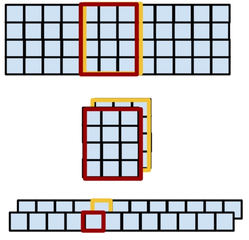
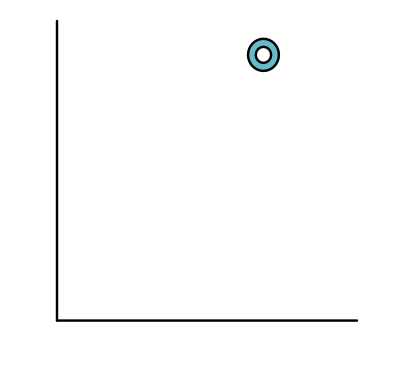
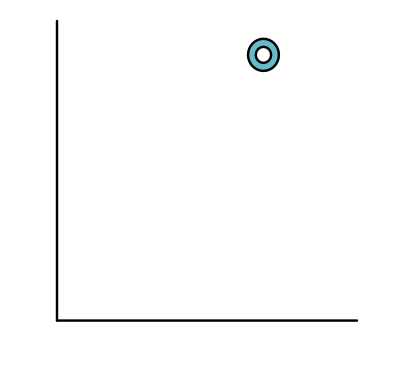
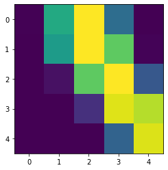
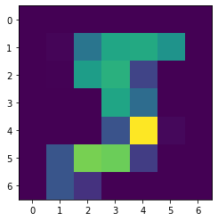
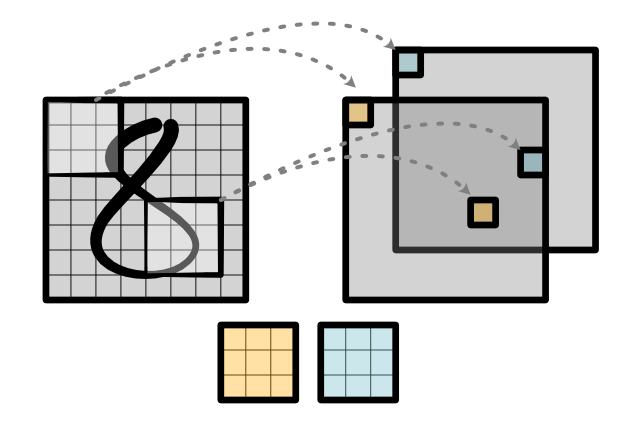
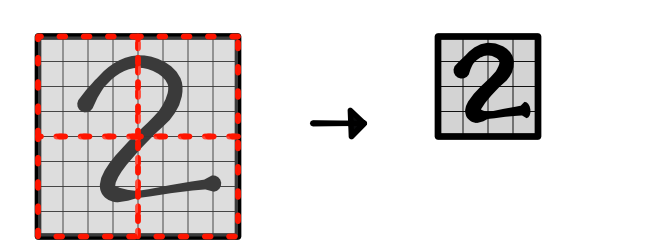

Module 4.2 - Images
Module 4.2
Images
View #1: Conv as sliding

Computation
Output Values
out[0] = w[0] * in[0] + w[1] * in[1] + w[2] * in[2]
out[1] = w[0] * in[1] + w[1] * in[2] + w[2] * in[3]
out[2] = w[0] * in[2] + w[1] * in[3] + w[2] * in[4]
...Gradient
Gradient
Output Values
out[0] = w[0] * in[0] + w[1] * in[1] + w[2] * in[2]
out[1] = w[0] * in[1] + w[1] * in[2] + w[2] * in[3]
out[2] = w[0] * in[2] + w[1] * in[3] + w[2] * in[4]Gradient values
d_in[2] = w[0] * d_out[2] + w[1] * d_out[1] + w[2] * d_out[0]Conv Back - Input
Reverse the convolutional anchor

NLP

Computation (input channels)
Output Values
out[0] = w[0, 0] * in[0, 0] + w[1, 0] * in[1, 0] + w[2, 0] * in[2, 0] \
w[0, 1] * in[0, 1] + w[1, 1] * in[1, 1] + w[2, 1] * in[2, 1]
...Graphical Representation
{kind=link}
Outline
Pooling
Image Rec
Conv 2d
Pooling
Challenge
How do we look at bigger areas with convolutions?
Issues
Number of parameters scale with weight size
"Bigger" patterns require more ways to split data.
Standard Reduction

"Pooling"
Reduction applied to each region:

Simple Implementation
Ensure that it is contiguous
Use View to "fold" the tensor
{kind=link}
Why does folding work?
View requires "contiguous" tensor
View(4, 2) makes strides (2, 1)
Simple Implementation
Reduce along created fold

2D Pooling
Need to isolate squares into a single dimension.
Tensor origami :)
Exercise
If I have a (10, 10) cube. How do I sum up neighboring rows?
Goal (5, 10) cube.
Fast Implementations?
If your reduce is on CUDA, can exploit small groups
I.e. Prefix sum for each group on one block.
Image Recognition
Challenge 1: Input Features

Data Set

Data Labels


Data Points
 

{kind=link}
Strategy
Build a neural network to classify these
Three Challenges
How do we handle input features?
How do we look at variable-size areas?
How do we predict multiple labels?
Network

Challenge 1: Input Representation
Challenge 1: Input Representation

Challenge 1: Input Features
Challenge 1: Input Features

Challenge 1: Input Representation
{kind=link}
Challenge 2: Variable Size Area

Challenge 2: Variable Size Area
Challenge 2: MNist Zoom
{kind=link}
Challenge 3: Multiple Output


Challenge 3: Multiple Output

Two Dimensional Convolution
Instead of line, now use box
Box is anchored at the top-left
Zip-reduce is over full box!
Convolution

Conventions
Sizes
# Input image - batch x in_channel x height x width
# Weight - out_channel x in_channel x kernel_height x kernel_width
# Output image - batch x out_channel x height x widthAlternative View
One step -> mat mul
Code
output[b, oc, h, w] = sum([weight[oc, ic, kh, kw] * input[b, ic, h + kh, w + kw]
for ic, kh, kw in ...])
# Input image - batch x (in_channel * height * width)
# Weight - (in_channel * kernel_height * kernel_width) x out_channelBackward

Backward
Same idea as 1D
Reverse weight (bottom-top, left-right)
Anchor bottom-right
Compute convolution
Channels
Nothing different from 1D version
{kind=link}
Implementation
All about understanding sizes.
Should be similar to matmul, start with output
If outside boundaries, use 0
Advice
Implement 1D first it is easier
Compute a couple manually yourself.
All about indexing
Where are we?
Pooling
Adjusts the scale at each layer
Conv stays the same size, image "zooms" out
2D Pooling
{kind=link}
Goal
Early layers: Capture basic shapes
Middle layers: How these connect
Later layers: Full objects
Example

3D Convolution?
Yeah!
Several neat versions
3D Convolution Voxels

{kind=link}
{kind=link}
{kind=link}